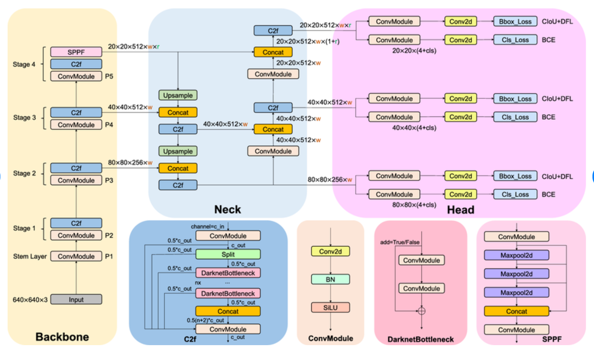
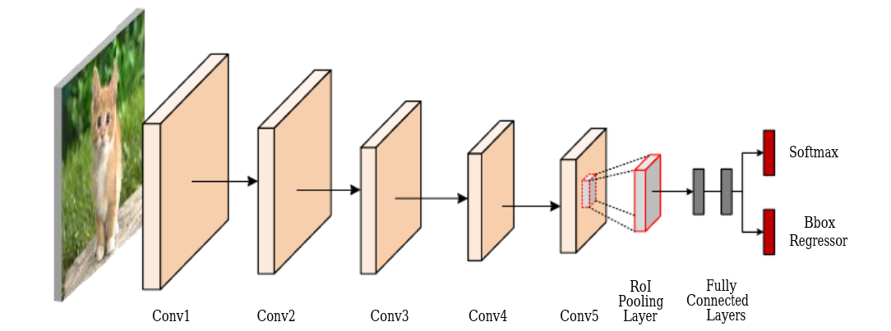
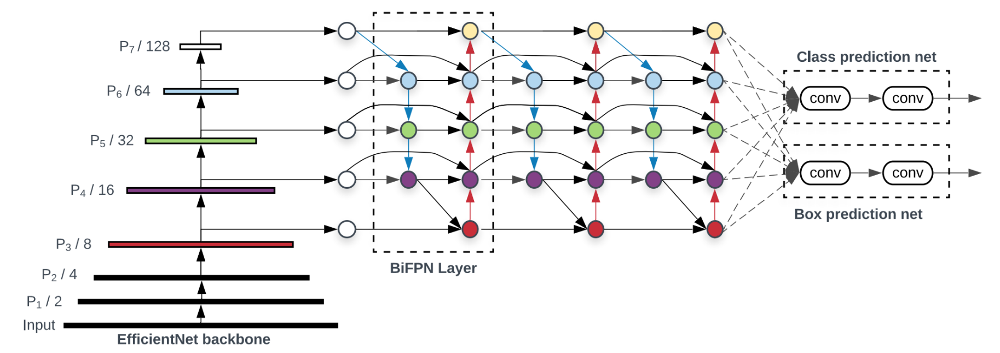
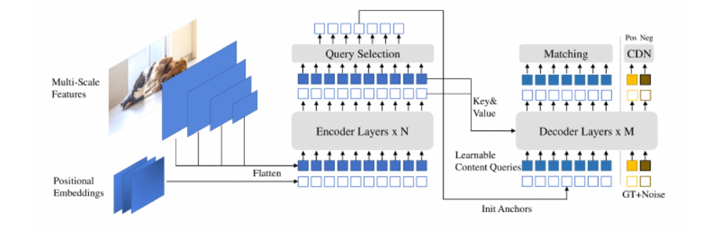

1차년도 데이터 수집에 추가 할 내용.
- 최소 400장의 포트홀 데이터가 필요하며, 시범 지역에서만으로 부족 할 수 있음.
- 데이터가 다양할 수록 좋은 데이터를 얻음.
-
따라서 사람이 직접 광주 산업단지에서 추가 데이터 획득할 필요 있으며 이를 계획서에 포함 해야 함.
-
중복 등록 방지 기술 개발
- 포트 홀 보고가 중복되지 않으려면 필수적인 조치임.
- 정확하고 효율적인 자원 관리를 위해 필수적임.
- 영상 메타데이터를 참조하여 영상을 중복 등록하더라도 애플리케이션이 중복을 제거하도록 조치.
- 메타데이터를 참조하여 YYYYMMDD-HH24-MISS-LATTITUDE-LONGITUDE 형식으로 생성.
- 수집된 영상에서 개인정보 비식별화 기술 개발
- 영상에서 사람 얼굴을 탐지하고 해당 영역을 흐리게 처리.
- 영상에서 차량 번호판을 탐지하고 해당 영역을 흐리게 처리.
-
개발된 기술은 데이터 저작 도구에 적용.
-
데이터 저작 도구 개발
-
자동으로 개인정보 비식별화 기술 적용.
- 사람으로 하여 개인정보 식별 여부 재확인 기능 개발.
- 중복 등록 여부 확인 후 조치 기능 개발.
- 흐릿하거나 포트홀이 제대로 보이지 않는 데이터(불량 데이터)를 자동으로 감지하고 제외할 수 있는 기능 개발.
- 포트홀이 위치한 영역을 정확하게 표시하기 위해 바운딩 박스를 그리도록 하는 기능 개발.
- 정밀한 바운딩 박스를 그릴 수 있도록 줌 기능 개발.
-
라벨링은 1차, 2차, 검수 단계를 거치므로 협업 시 리뷰 기능을 통해 라벨링 품질 검수 기능 개발.
-
포트홀 탐지 기능 개발 및 개선 상황에 따라 포트홀을 자동으로 탐지하고, 수동으로 수정할 수 있는 반자동 라벨링으로 효율성 증대.
- 라벨링이 정확하게 이루어졌는지 검토하고 수정할 수 있는 검수 기능 개발.
- 데이터셋에서 포트홀과 비포트홀 데이터의 분포를 분석하고 불균형이 있으면 이를 시각화하여 확인하는 기능 개발.
- 이미지 해상도, 포트홀 크기, 데이터 수량 등 다양한 통계를 분석하여 데이터셋이 균형 잡힌 상태인지 확인하는 기능 개발.
- 데이터셋의 버전을 추적하고, 업데이트된 데이터를 손쉽게 관리할 수 있는 기능 개발.
-
전 버전의 데이터셋으로 돌아가거나, 버전 간 차이를 비교할 수 있는 기능 개발.
-
영상 포트홀 탐지 기술 개발
-
인공지능 모델 개발.
-
수집되어 데이터 저작 도구를 통해 개인정보 비식별화, 정제, 통합, 라벨링된 데이터 활용 기능 개발.
-
데이터 전치리 작업.
- 데이터 증강: 모델의 일반화 성능을 높이기 위해 다양한 방법으로 데이터를 증강. 이미지 회전, 크기 조정, 밝기 조정, 좌우 반전 등을 통해 다양한 도로 상황을 모델이 학습할 수 있도록 함.
- 개인정보 비식별화 검증: 데이터 전처리 단계에서도 비식별화가 제대로 이루어졌는지 추가 검증을 수행하여, 개인정보가 포함된 데이터가 모델 학습에 사용되지 않도록 확인.
- 데이터 분할: 수집된 데이터를 학습(training), 검증(validation), 테스트(test) 세트로 나누어, 인공지능 모델이 과적합 되지 않도록 방지하고, 각 세트가 모델 성능 평가에 적절히 사용될 수 있도록 준비.
-
인공지능 모델 학습 및 평가
- 현재 딥러닝 기술 중 YOLOv8, Faster R-CNN, EfficientDet, DINO 포트홀에 탐지에 적합한데 이 모델들을 학습 시켜 정확도와 인퍼런스 속도를 평가하여 적절한 모델 선택.
- YOLOv8: 실시간 객체 탐지에 적합한 최신 모델로, 포트홀 탐지에도 적합할 수 있음. 이전 버전보다 향상된 속도와 정확도를 제공. 고해상도 도로 이미지에서 빠르게 포트홀을 탐지해야 하는 작업에 적합. 포트홀의 크기나 모양이 다양해도 YOLOv8의 높은 성능 덕분에 작은 객체나 복잡한 배경에서도 좋은 탐지 성능을 보일 수 있음. 비교적 가벼운 모델로, 리소스가 제한된 임베디드 시스템이나 드론, 모바일 기기에서 포트홀을 탐지하는 데 적합. 이는 도로 관리나 드론에서 적합.
- Faster R-CNN: 포트홀 탐지에서 정확도 측면으로 매우 강력한 성능을 발휘하며, 특히 복잡한 도로 환경에서 다양한 형태와 크기의 포트홀을 효과적으로 탐지할 수 있음.
- EfficientDet: EfficientDet은 신경망 아키텍처 설계에서 모델의 성능과 자원 효율성을 동시에 잇점. 적은 연산량과 메모리로 고성능을 유지할 수 있음. 포트홀 탐지와 같은 실제 환경의 적용에서 유용. 드론에서 적합. 계층적 구조를 통해 여러 해상도의 특징을 추출하고 다중 스케일 객체를 탐지하는 데 뛰어남. 포트홀은 크기와 형태가 다양할 수 있기 때문에, 다중 스케일 처리 능력이 중요.
- DINO: 주로 객체 탐지를 위한 Transformer 기반의 딥러닝 모델로, 특히 복잡한 장면에서 여러 객체를 효과적으로 탐지할 수 있으며, 포트홀 탐지와 같은 복잡한 도로 환경에서 높은 정확도를 요구하는 작업에 적합, 빠른 처리 속도와 함께 안정적인 성능을 제공.
-
인공지능 모델 학습:
-
하이퍼파라미터 설정: 학습률, 배치 크기, 에폭 수 등 모델 학습에 필요한 하이퍼파라미터를 설정.
-
모델 학습: 준비된 학습 데이터를 통해 모델을 훈련. 이때 손실 함수와 옵티마이저를 통해 모델의 성능을 최적화.
-
검증 데이터 사용: 학습 과정 중간중간 검증 데이터를 활용하여 모델의 과적합을 방지, 성능을 지속적으로 모니터링.
-
-
모델 평가 및 튜닝:
-
테스트 데이터 평가: 학습이 완료된 모델을 테스트 데이터로 평가. Precision, Recall, F1 Score, mAP 등의 성능 지표를 통해 모델의 정확도를 확인.
-
하이퍼파라미터 튜닝: 모델 성능이 미흡할 경우, 반복적으로 하이퍼파라미터나 네트워크 구조를 수정하여 성능을 개선.
-
-
운용용 컴퓨터 구성 (요구 사항에 따라 변경 될 수 있음.)
- 운용 클라이언트 및 서버 환경 구성.
- 운용 클라이언트 및 서버 평가
-
포트홀 탐지 인공지능 인퍼런스 API 개발
-
광주광역시 재난 관리 시스템 연동 기술 개발 등
- 다수 비행으로 인한 중복 포트홀이 탐지 될 수 있으며, 중복 포트홀을 보고에서 제외하는 기능 개발.
- 촬영 위치를 재난 관리 시스템이 사용하는 형식으로 변환. (관계 부서와 협력 필요)
- 재난 관리 시스템 연동 기술 협력 협의. (관계 부서와 협력 필요)
- 재난 관리 시스템 연동 및 평가. (관계 부서와 협력 필요)
2차년도
-
평가 서비스를 위한 운용:
-
평가 서비스를 위한 장비 구성.
- 평가 서비스를 통해 지속적인 데이터를 수집.
-
평가 서비스를 통해 피드백을 받고 서비스 개선.
-
데이터 저작 도구 개선
-
강화된 인공지능 모델을 적용하여 개인정보 비식별화 기술 향상.
-
데이터셋에서 포트홀, 크랙, 정상 데이터의 분포를 분석하고 불균형이 있으면 이를 시각화하여 확인하는 기능 개선.
-
이미지 해상도, 포트홀 크기, 크랙 크기, 데이터 수량 등 다양한 통계를 분석하여 데이터셋이 균형 잡힌 상태인지 확인하는 기능 개선.
-
데이터를 통한 탐지 성능 개선
-
평가 기간 동안 수집된 데이터를 통해 인공지능 모델 학습에 적용.
- 비, 눈, 얼음에 영향을 받은 포트홀 데이터 수집.
- 세계 각국의 추가 데이터셋을 획득하여 인공지능 성능 개선.
- 추가 데이터 증강 기술 개발.
-
데이터 증강을 통해 총 14,400 장의 영상으로 학습.
-
크랙 탐지 기술 추가 개발.
-
크랙 데이터 수집.
-
포트홀 데이터와 크랙 데이터를 함께 적용하여 파손 형태 별로 식별 기능 개발.
-
모델 개선을 통한 탐지 성능 개선.
-
데이터 강화: 인공지능은 데이터에 따라 성능이 개선 될 수 있으며 지속적으로 데이터의 정확도를 올려서 최선의 정확도를 도출하도록 학습 함.
- 성능 개선을 위한 조정: 하이퍼파라미터를 조정하여 학습과 평가를 반복하여 최선의 인공지능 모델 획득.
- 성능 향상: 배깅, 부스트, 스태깅을 통해 인공지능 성능이 개선 되도록 개발.
- 인공지능 모델 경량화: 요구 자원을 줄이면서도 성능은 유지 할 수 있도록 개발.
-
YOLOv9 적용을 위한 평가: PGI 및 GELAN와 같은 획기적인 기술을 도입하여 실시간 객체 감지에 개선 됨. 효율성, 정확성, 적응성 면에서 괄목할 만한 개선되었음.
-
모델 평가 및 튜닝:
- 학습이 완료된 모델을 테스트 데이터로 평가하고 반복 학습.
2차년도 데이터 수집에 추가 할 내용.
- 최소 400장의 크랙 데이터가 필요하며, 시범 지역에서만으로 부족 할 수 있음.
- 따라서 사람이 직접 광주 산업단지에서 추가 데이터 획득할 필요 있으며 이를 계획서에 포함 해야 함.
초기 요구 데이터 수량
| 구분 | 수량 | |
|---|---|---|
| 정상 영상 | 400~2,000장 | |
| 포트홀 영상 | 400~2,000장 | |
| 크랙 영상 | 400~2,000장 | |
| 전체 수량 | 1,200~6,000장 |
- 객체의 다양성 모델의 매개변수 크기에 따라 요구 수량이 다름
- 이후 시범 서비스를 수행하며 새로운 포트홀 발견시 업데이트
라벨링 예산: 직접 바운딩 박스 라벨링 할 경우 (1차년 기준)
시급은 적절히 조정 바랍니다.
라벨링 : 장당 3~5분 (1차 라벨링, 2차 검증, 3차 전문가에 의한 검증 수정 포함)
시급 : 20,000원 기준 (초급, 중급, 관리 평균).
시간당 20~12장.
장당: 1,000~1667원
라벨링 비용: 400,000 ~ 10,002,000
그외 포트홀 데이터 발견시마다 추가 할 경우 별도 라벨링 작업 필요 할 수 있음.
학습 비용 (1차년 기준)
3가지 모델을 시험하고 효율적인 모델 선택
최소: 3개월 X 3,000,000원 = 9,000,000원
최대: 6개월 X 3,000,000원 = 18,000,000원
그외 포트홀 데이터 발견시마다 추가 할 경우 별도 학습 비용 발생.
딥러닝 모델 후보
| 모델 | 장점 | 단점 |
|---|---|---|
| YOLOv8 | 경량으로 가성비가 좋음 | 스케일에 약하며, 후처리를 필요로 함 |
| Faster R-CNN | 보다 높은 정확도 | YOLOv8보다 요구 자원 높음 |
| EfficientDet | 다중 스케일 탐지 능력 | 요구 자원이 높음 |
| DINO | 높은 정확도 | 요구 자원이 높음 |
YOLOv8
YOLOv8은 실시간 객체 탐지에 적합한 최신 모델로, 포트홀 탐지에도 적합할 수 있음. (실험 필요)
속도와 정확성: YOLOv8은 이전 버전보다 향상된 속도와 정확도를 제공합니다. 이는 고해상도 도로 이미지에서 빠르게 포트홀을 탐지해야 하는 작업에 적합합니다. 포트홀의 크기나 모양이 다양해도 YOLOv8의 높은 성능 덕분에 작은 객체나 복잡한 배경에서도 좋은 탐지 성능을 보일 수 있습니다.
경량성: YOLOv8은 비교적 가벼운 모델로, 리소스가 제한된 임베디드 시스템이나 드론, 모바일 기기에서 실시간으로 포트홀을 탐지하는 데 적합합니다. 이는 도로 관리나 자율주행 차량에서 유용할 수 있습니다.
또한, 포트홀 탐지를 위한 모델 학습 시 실제 도로 이미지에 적합하게 데이터셋을 잘 구축하고, YOLOv8의 파인튜닝을 통해 성능을 극대화할 수 있습니다.

Faster R-CNN
Faster R-CNN의 정확도는 포트홀 탐지와 같은 객체 탐지 작업에서 높은 수준을 유지할 수 있습니다. 주요 이유는 Region Proposal Network (RPN)이 객체가 있을 가능성이 높은 영역을 효과적으로 찾아내고, 피처 맵을 기반으로 정확한 분류와 위치 예측을 수행하기 때문입니다. 이러한 메커니즘은 포트홀과 같은 작은 물체도 높은 정확도로 탐지할 수 있도록 합니다.
포트홀 탐지에서 Faster R-CNN의 정확도를 높이는 주요 요인은 다음과 같습니다:
고해상도 피처 맵: CNN의 계층 구조는 이미지의 세부 정보를 추출하는 데 매우 효과적입니다. 이러한 피처 맵은 포트홀과 같은 세밀한 특징을 잘 포착할 수 있어, 높은 정확도를 제공합니다.
후처리 과정 (NMS: Non-Maximum Suppression): Faster R-CNN은 여러 객체를 탐지한 후, 중복된 경계 상자를 제거하고 가장 가능성이 높은 영역을 선택하는 비최대 억제(NMS) 과정을 거칩니다. 이 과정이 정확도를 더욱 높이는 데 기여합니다.
클래스별 신뢰도: Faster R-CNN은 각 후보 영역에 대해 포트홀 여부를 확률적으로 계산하기 때문에, 높은 신뢰도를 가진 후보 영역만 최종 결과로 제시됩니다. 이로 인해 오탐(false positive)을 줄이고 정탐(true positive)의 비율을 높일 수 있습니다.
따라서, Faster R-CNN은 포트홀 탐지에서 정확도 측면에서 매우 강력한 성능을 발휘하며, 특히 복잡한 도로 환경에서 다양한 형태와 크기의 포트홀을 효과적으로 탐지할 수 있습니다.

Faster R-CNN 모델 아키텍처
EfficientDet
EfficientDet은 포트홀 탐지와 같은 객체 탐지 작업에서 매우 적합한 모델 중 하나로 평가될 수 있습니다. 그 적합성은 여러 요소에서 비롯됩니다.
- 효율적인 성능-자원 균형: EfficientDet은 신경망 아키텍처 설계에서 모델의 성능과 자원 효율성을 동시에 고려합니다. 이는 모델이 더 적은 연산량과 메모리로 고성능을 유지할 수 있다는 것을 의미하며, 포트홀 탐지와 같은 실제 환경의 적용에서 유용합니다. 드론, 차량, 모바일 디바이스 등의 제한된 자원에서 작동해야 하는 시스템에 적합합니다.
- 다중 스케일 탐지 능력: EfficientDet은 Feature Pyramid Network(FPN)과 같은 계층적 구조를 통해 여러 해상도의 특징을 추출하고 다중 스케일 객체를 탐지하는 데 능합니다. 포트홀은 크기와 형태가 다양할 수 있기 때문에, 이러한 다중 스케일 처리 능력은 작은 크기의 포트홀도 효과적으로 탐지하는 데 도움을 줄 수 있습니다.
- 비교적 빠른 추론 속도: EfficientDet은 연산량과 모델 크기를 감소시키면서도 높은 성능을 유지하도록 설계되어, 실시간으로 포트홀을 탐지하는 시스템에서 중요한 요소인 빠른 추론 속도를 제공합니다. 이는 특히 자율 주행 차량이나 드론 기반 시스템에서 실시간으로 도로의 상태를 모니터링해야 할 때 매우 유리합니다.
따라서 포트홀 탐지 작업에서 EfficientDet은 성능과 자원 효율성을 동시에 고려한 모델로서 매우 적합한 선택일 수 있습니다.

EfficientDet 모델 아키텍처
DINO
DINO (DETR with Improved DeNoising) 모델은 주로 객체 탐지를 위한 Transformer 기반의 딥러닝 모델로, 특히 복잡한 장면에서 여러 객체를 효과적으로 탐지할 수 있는 능력을 가지고 있습니다. 포트홀 탐지와 같은 문제에서는 DINO의 특징을 다음과 같은 이유로 활용할 수 있습니다:
- 정확한 물체 탐지 능력: DINO는 Transformer 아키텍처를 기반으로 하여, 이미지 내에서 다양한 크기와 모양의 객체를 탐지하는 데 유리합니다. 이는 포트홀과 같은 크기가 다양한 도로 손상 패턴을 정확히 감지하는 데 적합합니다.
- 복잡한 배경 처리: DINO는 복잡한 배경에서도 객체를 정확하게 탐지할 수 있는 성능을 보여줍니다. 도로 위의 그림자, 차량, 다양한 도로 마킹과 같은 혼란 요소 속에서도 포트홀을 식별할 수 있는 능력을 갖추고 있습니다.
- 빠른 예측 성능: DINO는 실시간 또는 준실시간 탐지 작업에도 적합하며, 이는 도로 환경에서 자율주행 차량이나 실시간 모니터링 시스템에 필수적인 요구 사항입니다.
- 노이즈 감소: DINO는 DeNoising 전략을 도입하여, 객체를 탐지하는 과정에서 잘못된 예측을 줄이는 데 효과적입니다. 이는 잘못된 포트홀 탐지로 인한 오탐을 줄이는 데 기여할 수 있습니다.
따라서 포트홀 탐지와 같은 문제에서 DINO는 특히 복잡한 도로 환경에서 높은 정확도를 요구하는 작업에 적합하며, 빠른 처리 속도와 함께 안정적인 성능을 제공할 수 있습니다.

DINO 모델 아키텍처
포트홀 탐지 성능 평가 (상황에 따라 계획서에 포함 하지 않음)
포트홀 탐지 모델의 성능 평가는 다양한 지표와 기법을 통해 이루어집니다. 일반적으로 사용하는 성능 평가 지표는 아래와 같습니다.
1. 정확도 (Accuracy)
- 전체 샘플 중에서 모델이 올바르게 분류한 비율을 의미.
- 클래스 불균형이 심한 경우, 즉 포트홀을 포함하지 않은 이미지가 훨씬 많은 경우 정확도는 유의미한 성능 지표가 아닐 수 있음.
여기서:
- TP: 포트홀이 있을 때 정확히 포트홀이라고 예측한 경우 (True Positive)
- TN: 포트홀이 없을 때 없다고 예측한 경우 (True Negative)
- FP: 포트홀이 없는데 포트홀이라고 예측한 경우 (False Positive)
- FN: 포트홀이 있는데 없다고 예측한 경우 (False Negative)
| 구분 | True | False |
|---|---|---|
| Positive | 포트홀이 있을 때 정확히 포트홀이라고 예측한 경우 | 포트홀이 없는데 포트홀이라고 예측한 경우 |
| Negative | 포트홀이 없을 때 없다고 예측한 경우 | 포트홀이 있는데 없다고 예측한 경우 |
2. 정밀도 (Precision)
- 포트홀이라고 예측한 경우 중 실제로 포트홀이 포함된 경우의 비율입니다. False Positive가 낮을수록 정밀도가 높음.
3. 재현율 (Recall)
- 실제 포트홀이 있을 때 이를 정확히 감지한 비율을 의미하며, False Negative를 낮추는 것이 중요할 때 중요한 지표임.
4. F1 점수 (F1 Score)
- Precision과 Recall의 조화 평균으로, 두 지표 사이의 균형을 평가하는 데 유용. 모델이 포트홀을 잘 감지하면서도 False Positive와 False Negative를 적게 만들고자 할 때 중요한 지표.
5. ROC 곡선 및 AUC (Area Under the Curve)
- ROC 곡선은 모델의 성능을 True Positive Rate (재현율)과 False Positive Rate 간의 관계로 표현한 그래프. AUC는 이 곡선 아래의 면적을 의미하며, 1에 가까울수록 성능이 좋다고 할 수 있음.
6. IoU (Intersection over Union)
- 포트홀 감지를 위한 객체 탐지 모델에서는 IoU가 중요한 평가 지표로 사용. 실제 포트홀 영역과 예측한 포트홀 영역 간의 겹치는 정도를 측정.
여기서:
- A: 실제 포트홀의 경계 상자(Ground Truth)
- B: 예측된 포트홀 경계 상자
IoU는 보통 0.5 이상의 값이 나오면 적절한 탐지로 간주.
7. 평균 정확도 (mAP, mean Average Precision)
- 객체 탐지 모델의 성능을 평가하는 대표적인 지표로, 다양한 IoU 임계값에서의 평균 정밀도를 평가. IoU의 임계값을 변화시키면서 포트홀 탐지의 정밀도를 평가.
설명
야간 촬영의 문제점
- 조명 부족 문제 (야간 비행과 별도로 아래 문제가 예상되며 실험이 필요):
- 야간 사진은 광량 부족으로 블러 발생으로 인식이 잘 안될 수 있음.
- 드론에 조명을 설치하여도 가로등 보다 약해 무의미 할 수 있으므로 실험 필요.
-
다양한 조명으로 인해 더 많은 데이터가 필요 하여 라벨링과 학습에 비용이 증가 할 수 있음.
-
야간에 촬영 해야한다면 이벤트 카메라로 촬영 후 재구성하여 블러 없는 저해상도 HDR 영상을 얻을 수 있지만, 객체 탐지 등에 적합 한지 연구가 없음.